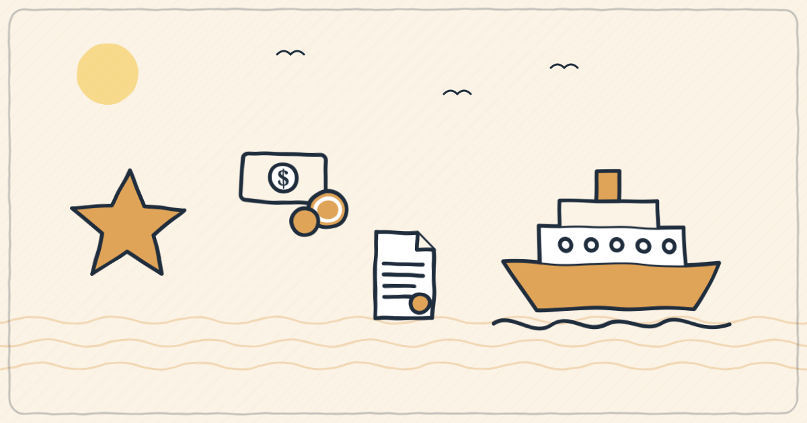

Cruise Military Discounts: Who Qualifies, Line by Line

Most major lines offer something for serving members, retirees and veterans, but the shape differs: Princess gives onboard credit (up to US$250), Celebrity takes US$25–100 off per person, while Royal Caribbean, Carnival and MSC sell a separate military fare. Only Royal Caribbean, Carnival and MSC have explicitly included Canadian Forces in published terms.
Cruise lines reward military service in three different ways: a cheaper fare, a fixed amount off, or credit to spend on board. Which one saves you most depends on your cabin, your cruise length and, for Canadians, whether the line recognizes your service at all. Below, the eight programs cruisers ask about most: how each works, what proof it wants and how to make sure you actually get the lower price.
Three kinds of military discount, and why the type matters
- A separate military fare. Royal Caribbean, Carnival and MSC publish a distinct rate for qualifying sailings. It can be a big saving or almost nothing, because it sits beside public sales rather than on top of them.
- A fixed dollar amount off. Celebrity's program works this way. You know the saving before you look at the fare.
- Onboard credit. Princess leads here. The fare is unchanged, but you get spending money for drinks, excursions or the spa. It is worth face value only if you would have spent that much anyway.
Cruise line military programs compared
| Line | Benefit | Serving | Retired or veteran | Family | Canadian Forces? | How you prove it |
|---|---|---|---|---|---|---|
| Royal Caribbean | Military rate on selected sailings | Yes (US and Canada) | Yes, retirees and honourable discharges | Surviving spouses | Yes, named in terms | Documents when booking |
| Carnival | Military rate, varies by cabin and itinerary | Yes | Yes (US) | Not stated | Yes, National Defence members named | Documents when booking |
| MSC | Savings on several cabins; no penalty for deployment cancellations | Yes (US and Canada) | Yes | Spouses, parents, in-laws, children | Yes, named in terms | Documents when booking |
| Princess | Onboard credit, up to US$250 per stateroom | Yes | Yes, including disabled veterans | Not stated | Not stated | Proof of service |
| Celebrity | US$25 off per person (inside, ocean view); US$100 off (balcony and up) | Yes | Retired only | Not stated | Not stated | Proof of service |
| Norwegian | Discount on qualifying fares | Yes, incl. reserves and Guard | Yes | Not stated | Not stated | ID.me via My NCL |
| Disney Cruise Line | Reduced rate on one stateroom per member | Yes (US) | Retired (US) | Spouses, Guard, Reserve | No | Military ID at the pier |
| Margaritaville at Sea | "Heroes Sail Free" Bahamas cruise; taxes, fees and tips payable | Yes | Yes | No; also first responders, police, teachers | Not stated | GovX or ShopVCS |
All dollar figures are US dollars and reflect each line's published program at recent review. Military offers change with each promotion cycle and often apply only to certain ships and dates, so confirm the current terms for your sailing before paying a deposit.
Which line has the best military discount for me?
Serving or retired US military
Start with the fixed-value offers because they are easy to compare: Celebrity for a balcony, Princess for a longer sailing where the credit tier is higher. Then price Royal Caribbean and Carnival's military rates against their own public sales for the same week. If you are flexible on destination, Margaritaville at Sea's free cruise is the biggest headline saving, with the caveats below.
Families
MSC is the standout. Its program reaches parents, in-laws and children across more than one cabin, and it waives cancellation penalties when a deployment gets in the way of the trip.
Canadian Armed Forces members and veterans
Three lines have written Canadian service into their published terms: Royal Caribbean, Carnival and MSC. Begin there. For the others, the stumbling block is usually verification rather than policy. ID.me and GovX check US records, so a Canadian service card or release papers may not pass automatically.
Do first responders and seniors get cruise discounts?
Police, firefighters and paramedics have fewer options. Margaritaville at Sea's Heroes program is the most generous, and a handful of lines run occasional first responder promotions, nearly all aimed at US agencies. Ask when booking rather than expecting a standing rate.
Senior discounts are rarer still. Unlike hotels, cruise lines do not maintain permanent over-55 or over-65 rates. Senior fares appear as short promotions on selected sailings and seldom beat the best public price. Retirees usually save more through flexible dates and shoulder-season sailings than through any age-based rate.
Can you stack a military discount with other promotions?
Usually not fully. A military fare is a rate in its own right, so you pick it or the public promotion, not both. Credit-based programs like Princess's have a better chance of sitting alongside a sale, because the fare itself is untouched. The same either-or usually applies to a group rate on a block of eight cabins, so a veteran travelling with a reunion should price both.
- Price your cabin at the public promotional rate, all taxes and fees in.
- Price the same cabin at the military rate, or add the onboard credit value to the public fare.
- Convert to the currency you will pay in, as explained in paying for a cruise in CAD or USD.
- Book the lower total and get the eligibility confirmed in writing on the booking.
Where a military rate makes the biggest difference
Fixed-dollar and credit offers matter most on cheaper cabins and shorter cruises, where US$100 is a real share of the fare. Separate military fares tend to show their value on sailings with weak demand, such as repositioning cruises and shoulder-season Alaska. If you are weighing a cruise against a resort or road trip, cruise vs land vacation costs sets out how to compare the totals, and what an Alaska cruise from Vancouver costs gives a full budget to apply the discount to.
Want this checked for your own sailing? A licensed cruise consultant can price it up and answer questions for free, with no obligation.
Ask a cruise expert →Confirm first, then book
Check eligibility against the line's current terms, get it noted on the reservation, carry proof to the terminal, and keep comparing the military rate against public sales until final payment. The discount only counts if it survives check-in.
Still wondering?
Do cruise lines give discounts to veterans?
Yes, on most lines. Royal Caribbean, Carnival, Princess, Celebrity, Norwegian and MSC have all extended their military programs to veterans or retirees, not just active duty. You will need proof of service, typically a DD-214, VA card or retiree ID in the US, verified at booking or check-in.
Do Canadian military members get cruise discounts?
Some lines, yes. Royal Caribbean names active duty in the US and Canada, Carnival names Canadian National Defence members, and MSC covers US and Canadian military and their families. Other programs are built around US verification tools, so ask whether an agent can check Canadian documents manually.
Is a cruise military discount better than a regular sale?
Not always. Military fares are usually a separate rate rather than a coupon on top of a promotion, so a strong public sale can undercut them. Price the same cabin both ways on your sailing and book the lower total.